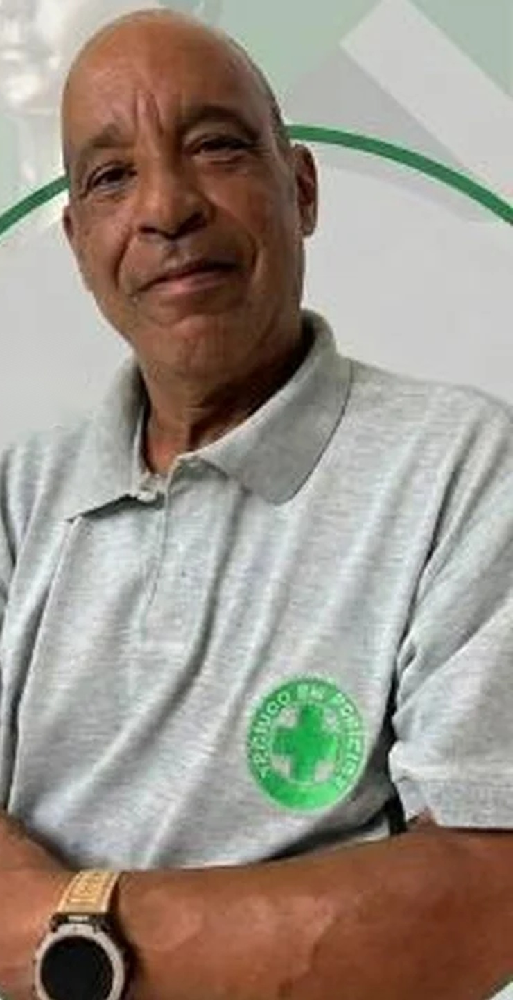

Análise das condições de trabalho, riscos ocupacionais e documentação técnica para apoio em procedimentos periciais.
José Carlos de Souza • Atuação anunciada nos setores industrial, metalúrgico, químico e de transportes.
Atendimento para consultorias e orçamentos. Escopo sujeito à avaliação técnica.

A assistência técnica pode apoiar partes e equipes jurídicas na preparação documental, análise de postos de trabalho e acompanhamento de perícias, com parecer técnico quando cabível e dentro das atribuições profissionais.
NR 15, NR 16, acidentes de trabalho, PPP e avaliações relacionadas às normas NR 10, 12, 17, 33 e 35. Clique em uma área para ver os pontos de análise e as dúvidas frequentes.
Entenda o objetivo de cada análise e solicite informações sobre disponibilidade e escopo.
Solicitar orçamento →Experiência anunciada em diferentes ambientes produtivos. Áreas industriais mencionadas no material.
Consulte a possibilidade de atendimento. Informe a atividade, local de atuação e finalidade da análise.
Solicitar informações →Assistência técnica em perícias trabalhistas e previdenciárias. Mais de dez anos de experiência, com atuação nos setores industrial, metalúrgico, químico e transportes.
Atuação nas normas NR 15, NR 16, NR 10, NR 35, NR 33, NR 12 e NR 17, além de acidentes de trabalho e revisão de PPP.
O trabalho de assistência técnica inclui, conforme a contratação e as atribuições profissionais, exame documental, identificação de condições de trabalho relevantes, acompanhamento técnico de perícia e elaboração de manifestação fundamentada sobre o material pericial. Experiência anunciada nos setores metalúrgico, químico e de transportes.
Uma apresentação clara das etapas ajuda a identificar a demanda antes da contratação.
Contato inicial para demandas em assistência técnica pericial trabalhista e previdenciária.
Entre em contato. Informações, consultorias e orçamentos.
Solicitar orçamento →Artigos informativos para compreender conceitos e procedimentos técnicos. Cada caso exige análise individual. Informações sobre perícias trabalhistas, previdenciárias, normas regulamentadoras e avaliação de condições de trabalho.
Novo tema técnico: NR 6 e avaliação de EPI — seleção, adequação, uso e documentos de proteção individual.
↑ VOLTAR AO MENUPara avaliar uma situação específica, é necessário conhecer a atividade, os registros existentes e os critérios normativos envolvidos. Informações gerais não substituem exame técnico individual.
É possível entrar em contato para verificar a pertinência de um atendimento e solicitar informações sobre o escopo da análise.
Apresente sua demanda para avaliação inicial de disponibilidade e orçamento.
Consultar disponibilidade →Nenhum termo encontrado.
Entre em contato para apresentar sua demanda trabalhista ou previdenciária e solicitar informações sobre o atendimento.
Confirme disponibilidade e modalidade de atendimento diretamente com o profissional.